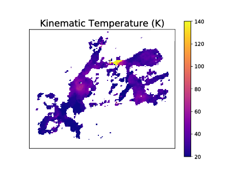
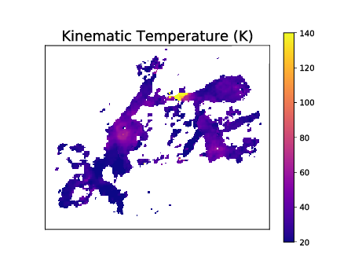
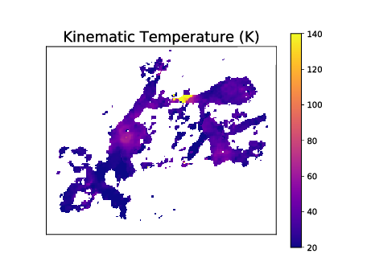
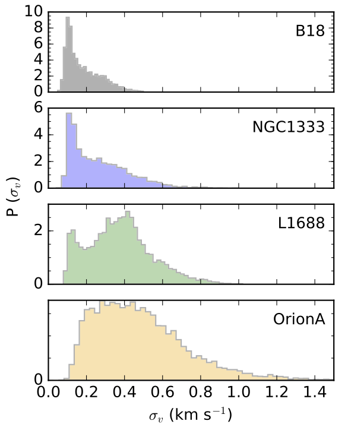

Surveys of the dense Galactic ISM with ALMA
Slides available at https://keflavich.github.io/talks/aas236_observations_of_the_ISM.html.
Use arrow keys to navigate.
Brief admonition aimed at theorists
In the ISM:
- Mass is not observable
- Age is not observable
- Line-of-sight velocity is generally observable
- Gas temperature is sometimes kinda observable
Don't compare theory mass, age to reported blindly


Take mass measurements with a grain of salt
But, kinematic mass measurements from disk Keplerian curves are OK. Orion's Source I has a central 15 M⊙ star. Accurate measurements of disk sources are good for calibration
Take mass measurements with a grain of salt
Measurements of mass and column density in molecular clouds are subject to factor of several systematic uncertaintyALMA, VLA, GBT observations of Galactic HMSFRs
A few key surveys are ongoing or done:- ALMA-IMF: first data release this year
- CMZoom: Data paper, catalog paper submitted
- ALMAGAL: data acquisition ongoing [I'm not involved]
- ALMA-IMF analogues & affiliates (NH3 followup)
- GAS: Greenbank Ammonia Survey (local clouds)
- KEYSTONE: Greenbank ammonia survey of more massive clouds
Kinematics
ALMA & VLA surveys will provide detailed kinematics of the dense gas: N2H+, HC3N, etc.
(not CO in our Galaxy).
Henshaw+2020: Velocity 'wiggles' pervade the ISM on all scales.
Henshaw+2020: Velocity 'wiggles' pervade the ISM on all scales.
SCOUSE and other tools will make these measurements more common.
Kinematics: New tools, new measurements
Semi-automated
- Henshaw+ 2019: SCOUSE, jdhenshaw/scousepy
Automatic, heuristic-based
- Riener+ 2019: GaussPy+, mriener/gausspyplus
- Chen+ 2020: MUFASA, mcyc/mufasa
- Marchal+ 2019: ROHSA, antoinemarchal/ROHSA
Automated – convolutional neural network (fast!)
- Keown+ 2019: CLOVER, jakeown/astroclover
Automated – Bayesian Monte Carlo
- Sokolov+ 2020: pyspecnest, vlas-sokolov/pyspecnest
- Svoboda+ in prep: NestFit, autocorr/nestfit
Slide credit: Brian Svoboda
 



Kinematics and Temperature
HMSFRs are warmer, broader-lined than local clouds

Svoboda+ in prep, Mon R2 (left); Machado+ in prep, W51 (right)
Kinematics and Temperature
HMSFRs are warmer, broader-lined than local clouds
Friesen&Pineda+ 2017 (left); Keown+ 2019 (middle); Machado+ in prep, W51 (right)
Kinematics and Temperature
HMSFRs are warmer, broader-lined than local clouds



Friesen&Pineda+ 2017 (left); Keown+ 2019 (middle); Machado+ in prep, W51 (right)
Kinematics and Temperature
Narrow-linewidth "local clouds" exist within HMSFR clouds.
Machado+ in prep, W51